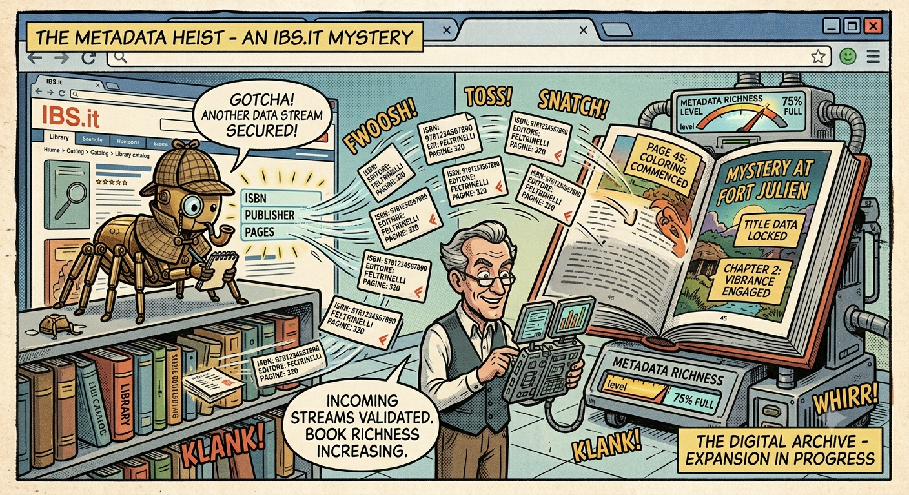

← Torna ai progettiIBS EPUB Metadata Scraper
Arricchisci i tuoi EPUB con metadati da IBS.it — ricerca automatica, estrazione e embedding di ISBN, editore, descrizione, lingua e pagine direttamente nel file EPUB.
📋 Tre Strumenti in Uno
| Caratteristica | ibs_fast 🏆 | ibs_legacy | GUI 🖥️ |
|---|---|---|---|
| Tipo | CLI | CLI | GUI (customtkinter) |
| Sorgente | API Algolia diretta | Algolia via Playwright | API Algolia diretta |
| Velocità | ⚡ 1.1 sec/libro | 🐢 8-15 sec/libro | ⚡ come ibs_fast |
| Browser | ❌ Nessuno | ✅ Playwright | ❌ Nessuno |
| Log in tempo reale | Terminale | Terminale | ✅ GUI colorata |
🖥️ GUI
L'interfaccia grafica usa customtkinter per un look moderno e scuro. Permette di selezionare la cartella, configurare le opzioni via checkbox (--force, --json-only, --verbose), avviare la pipeline con un clic e visualizzare il log in tempo reale con colori (verde = successo, rosso = errore, giallo = warning). Pulsante Stop per interrompere l'esecuzione in qualsiasi momento.
📁 Pipeline Output
Eseguito con --force su una directory, lo script:
- Scarica metadati da IBS.it
- Copia backup originali in
origins/ - Riscrive gli EPUB con metadati arricchiti in
embedded/ - Sposta i non trovati in
notfound/ - Genera report HTML e JSON dei risultati
📊 Performance Real-World
Test eseguito su 49 EPUB italiani con ibs_fast_metadata_search.py:
- Tempo totale scraping: 54.5 secondi
- Success rate: 100% (49/49)
- Con ISBN: 49/49
- Con editore: 49/49
- Con descrizione: 49/49
- Con pagine: 46/49
🛠️ Utilizzo CLI
python ibs_fast_metadata_search.py ./libri/ --force — embedding automatico senza conferma
python ibs_fast_metadata_search.py ./libri/ --json-only — solo scraping, produce metadata_batch.json